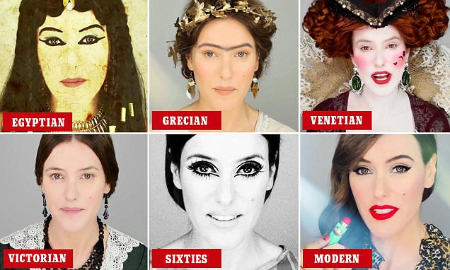

La historia del maquillaje
Las mujeres del Imperio Romano usaban maquillaje de plomo para blanquearse el rostro, y en el siglo XVI, las nobles inglesas adoptaron la costumbre. Uno de los personajes más famosos que utilizó maquillaje de plomo fue la reina Isabel I, quien lo aplicaba para cubrir cicatrices de viruela.
